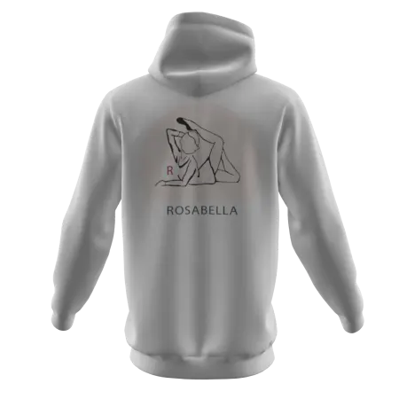

{kind=link}
{kind=link}
{kind=link}
{kind=link}



Visandid ja struktuurikavandid
Disainikavandamine ja prototüüp
Veebitehnoloogiad
HTML, CSS ja Bootstrap
Veebilehe või rakenduse loomine hõlmab palju enamat, kui koodi kirjutamine või Wordpressis veebilehe ehitamine. Disainiprotsessid mängivad siin olulist võtmerolli. Läbimõeldud struktuur, mugavad kasutajateekonnad, sobiv visuaal on hästi toimiva veebikeskkonna alustala. Antud aine moodulis tutvusin disaini kavandamise erinevate etappidega visandist prototüübini. Paralleelselt toimusid HTML/CSS märgendkeele praktilised tunnid.
Noppeid ja infoampse veebikujunduse tundidest.
Mõtte ja analüüsi osa projektist, ehk visandamine ja kavandamine on olulised etapid. Tark on üheksa korda mõõda ja ühe korra lõigata.
Figma on UX disaineri oluline tööriist, see keskkond tuleb kindlasti ajas endale põhjalikult selgeks teha.
Kogemus näitab, et inimesed seostavad disaini sageli visuaalse kujundusega. Tegelikult on disain palju laiem mõiste, kus UX/UI disaineri töös tuleb analüüsida ning disainida erinevaid tegevusi, mis on seotud struktuuri ülesehituse või ka näiteks teenuste analüüsi või arendustegevusega.
HTML ja CSS märgendkeelega varasemalt kokkupuude puudus. Nagu iga uue asjaga siis ka siin oli algus segadustekitav ja keeruline. Palju iseseisvat tööd ning õpetaja roll oli tagasihoidlikum, kui ehk mõnes muus aines.
Siinkohal julgen kerge uhkusega tunnistada, et teadmised HTML ja CSS osas olen 95% ulatuses iseseisvalt omandanud. Portfoolio mida hetkel loed on ilmselt suurim silmaga nähtav areng, mis on saavutatud suure töö ja pühendumusega.
Arvan, et HTML ja CSS on hea algus neile, kes soovivad koodi kirjutamisega alustada. Antud märgendkeele algteadmised ja mõistmine võiks UX/UI disaineritel kindlasti olemas olla, kuid küsimus kui palju antud teadmisi tulevikus vaja läheb, sõltub sellest, mis erialane suund valida kas disain või arendus. Isiklikult leian, et meie õppekavas on fookus liiga nihkes front-end arenduse poole ning vaja oleks skaalat nihutada UX/UI disaini suunas.